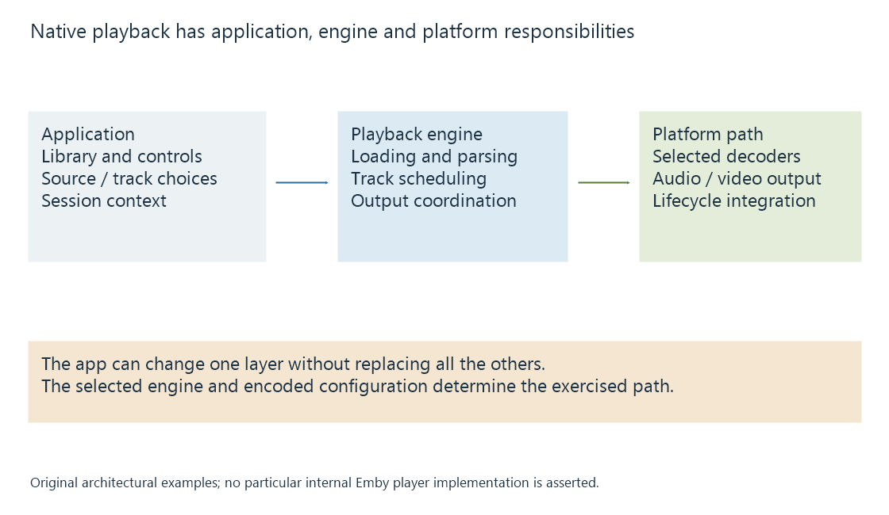

Native media players and their playback engines
A native media player uses application and platform media components to retrieve, decode and present content within an operating system’s playback environment.
A native media player runs as an application in the device's operating-system environment. Its playback engine coordinates media retrieval, parsing, decoding, timing and output, while the app supplies library navigation and controls.
The native app and its playback engine are related components. They need not be the same piece of software.
A visible app sits over several responsibilities
A player can use platform media frameworks, include its own parsing or decoding components, or combine both.
Android Media3 ExoPlayer provides one public example: container and delivery support belongs to the player library, while its default sample decoders come from the platform. Included software-decoder extensions can change that arrangement.
Apple AVKit supplies playback user-interface components over AVFoundation and related media facilities. These are examples of how native playback is layered, rather than a universal blueprint for Emby apps.

| Component | Typical responsibility |
|---|---|
| Application | Source selection, controls, account and library context |
| Playback engine | Resource loading, stream parsing, track selection and scheduling |
| Decoder path | Converting encoded pictures or samples to usable media |
| Platform output | Display timing, audio routing and device integration |
An application can customize one layer without replacing every layer beneath it.
Two apps can expose different media paths
Suppose a device has a hardware decoder for a particular video format. Player A's engine can parse the selected container and submit that video configuration to the decoder. Player B's engine cannot accept that container arrangement.
A may play the original source while B needs another package from the server, even though the same physical decoder exists on the device.
Another difference can be subtitle rendering. One app can draw the selected text subtitle directly; another may need a supported subtitle representation or video with the subtitle already painted into it. The video decoder's capabilities alone do not answer that question.
The actual intersection appears in client playback capabilities. “Native” describes the application environment rather than a complete support list.
Output integration affects the result
Native playback can use platform facilities for audio focus, background presentation, hardware surfaces or display output. These facilities have their own state and route requirements.
Changing from built-in speakers to a different audio output can alter the usable channel configuration. Changing the app's playback engine can alter container, subtitle or hardware-decoding behavior. The source file can remain identical throughout.
See Also
- Browser media playback and its loading paths
- External players and the application handoff
- Client playback capabilities
- Decoding media streams
- Media playback on mobile devices
- Smart TV playback limitations and player paths